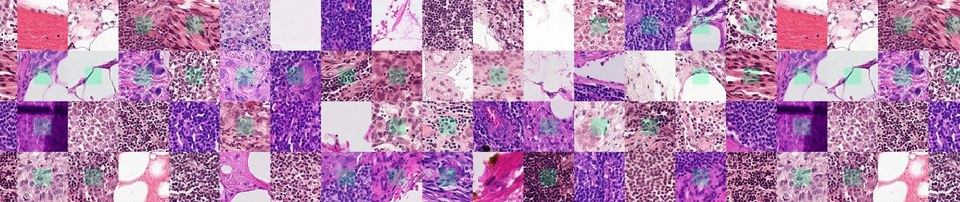

Tuần 12 · Tầng 01 (Domain Augmentation), Tầng 02 & Tầng 05 (Test-Time Adaptation)
Domain Generalization & Adaptation: FDA / Histogram Matching, MixStyle, Deep CORAL & TENT
02 · Backbone & Neck
05 · Inference & Metric
skimage + FFT FDA + Tự Build MixStyle/TENT
Kích hoạt bộ chia
LeaveOneGroupOut theo miền (Giai đoạn 0): Luôn tách hẳn một nguồn thu thập làm tập Validation ngoại miền trước khi đo hiệu quả của khớp phổ tần số thấp (FDA), trộn thống kê phong cách (MixStyle) hay thích nghi lúc chấm Test (TENT).
Kaggle Medical Competition · Stain Shift
Histopathologic Cancer Detection
Identify metastatic tissue in histopathologic scans of lymph node sections

220.025 ảnh vi thể hạch bạch huyết có độ lệch màu thuốc nhuộm H&E mạnh giữa các phòng xét nghiệm (chấm ROC-AUC).
Mở cuộc thi trên Kaggle ↗
Stanford Benchmark · Real Distribution Shifts
Stanford WILDS Benchmark
Curated benchmark of real-world distribution shifts across hospitals, camera traps, and satellites
Bộ chuẩn thế giới đánh giá trực tiếp độ sụt giảm hiệu năng giữa In-Distribution Val và Out-of-Distribution Test.
Mở trang WILDS Stanford ↗
Bước 1 · Dùng Thư Viện Chuẩn
Khớp miền tức thì bằng
skimage.exposure.match_histograms, FFT FDA (7 dòng) & AdaBN
domain_adaptation_skimage.py — Khớp Thống Kê Màu Bằng scikit-image, FFT & AdaBN
mastercv/backbones/domain_generalization.py — MixStyle, GRL, Deep CORAL & TENT
Checklist Hoàn Thành Tuần 12:
- Đánh giá
FDA/AdaBNtrên kịch bản lệch màu mô bệnh học Kaggle Camelyon hoặc WILDS. - Cắm
MixStylevào sau Stage 1–2 của Backbone và kiểm chứng mức tăng điểm trên miền ẩn hoàn toàn mới.